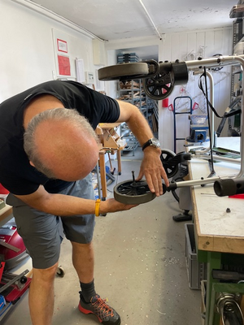
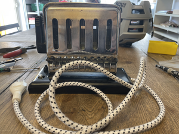
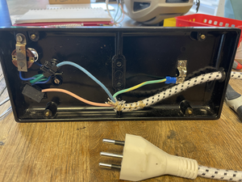
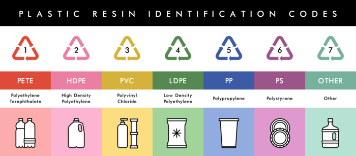
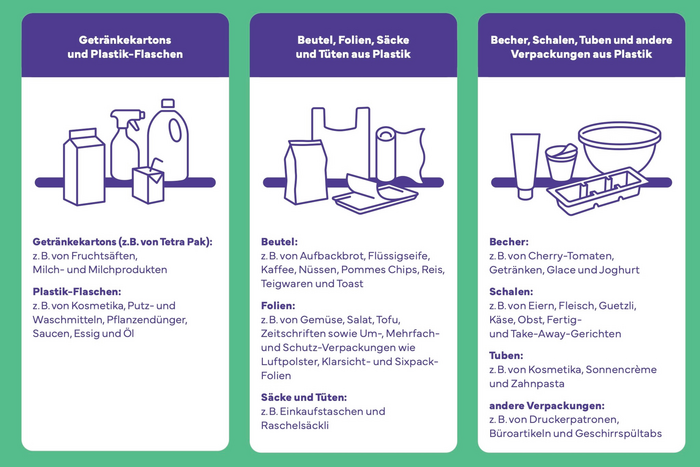
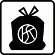
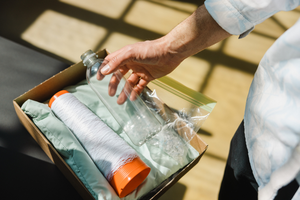
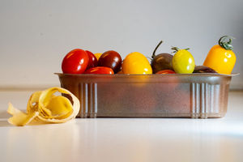
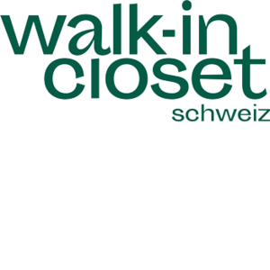
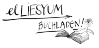

Falls der Newsletter nicht korrekt angezeigt wird, kann er auch hier online gelesen werden.

Neues von Quasitutto, 7. Ausgabe
Wir freuen uns, Ihnen mit unserer Frühlingsausgabe — nach dem Motto „Alles neu macht der Mai“ — unsere Webseite www.quasitutto.ch nun frühlingshaft frisch vorzustellen.
Ein paar Beispiele aus unserer Werkstatt
|
Rollator Service  Bremsen eingestellt, Räder gefettet. |
Toaster Reparatur   Neues Anschlusskabel, Öffnungsfeder montiert, Geräteprüfung. |
Recyceln und Kreislaufwirtschaft
Recyceln und Kreislaufwirtschaft sind DIE grossen Themen die uns alle beschäftigen. Neben Reparieren, Pflegen und Sorge tragen zu unseren Gegenständen. Bei uns im Quasitutto steht natürlich das Reparieren im Vordergrund.
Recyceln ist ein Thema, das uns alle angeht. Darum können Sie hier immer wieder Texte dazu lesen oder Links anklicken. Hier nochmals eine kurze Zusammenfassung zum Thema: Plastik recyclen.

Resin Identification Codes (RIC) auf Verpackungen.Hinter diesen Dreiecksymbolen auf den Verpackungen sind sieben Hauptgruppen von Kunststoffen verborgen. Sie sind mit Nummern gekennzeichnet. Die sogenannten Resin Identification Codes (RIC).
Die Symbole eins bis sieben bezeichnen die sieben Hauptgruppen des bei Verpackungen verwendeten Plastiks. Nicht aber das Recyclingsystem, wie viele fälschlicherweise annehmen. In den Kunststoffsammelsack werden Lebensmittelverpackungen der Kategorien 2 bis 6 gesammelt.

Was gehört in den Kunststoffsammelsack?|
 Dürfen Verpackungen mit dem Abfallsymbol in den Sammelsack? |
„Ja“ sagt der Anbieter des Sammelsackes. Für Verpackungshersteller gibt es noch keine einheitlichen Richtlinien. Kunststoffverpackungen können problemlos dem Recycling zugeführt werden, auch wenn das Abfallsymbol aufgedruckt ist. Hier der ausführliche Artikel im Tages Anzeiger: Wieso viele Plastik falsch recyceln – und wie es besser geht. Auch dieser Artikel im Tages Anzeiger ist informativ: «Ich will, dass man Abfall mit ruhigem Gewissen hier abgeben kann» Hier zum Nachhören: Kassensturz Februar 2026 |
Wir stellen vor: Wir sind Zukunft
|
Die nationale Initiative Wir sind Zukunft ist eine seit 2020 bestehende Offensive, die Inspiration und Anregungen rund um die Themen Energieeffizienz, Klimaschutz und Umwelt bietet. In Zusammenarbeit mit namhaften Partnern aus der Privatwirtschaft, mit Unterstützung von EnergieSchweiz sowie Tamedia als etabliertem Medienpartner werden unterschiedliche Aspekte einer energieeffizienten und klimaschonenden Zukunft aufgezeigt. Die Kampagne Wir sind Zukunft aktiviert die Schweizer:innen 2026 bereits im siebten Jahr zu mehr Nachhaltigkeit, Energieeffizienz und Klimaschutz im eigenen Alltag. |
Hier Beispiele aus Wir sind Zukunft
|
Am Kraftwerk Letten fischt Peter Hornung PET-Flaschen aus dem Wasser, von Hand, seit 2019. Was wie eine Aufräumaktion klingt, ist der Anfang einer Produktionskette: Das Zürcher Label Round Rivers macht aus Flussplastik Mode, produziert im regionalen Umfeld. Die limitierte «Swiss Waste Jacket» besteht aus Limmat-PET sowie recycelter Schweizer Daune. Hier der ganze Artikel im Tages Anzeiger: «Was im Fluss treibt, zieht man an» |
 Vom Abfall zur Mode: Jede aus der Limmat gefischte PET-Flasche dient als Rohstoff für die kreislauffähige Kollektion vom Label Round Rivers |
|
 Verpacken Migros und Coop Gemüse bald in Kartoffelschalen? |
Die Zürcher Peelpack AG produziert einen Plastikersatz aus Kartoffelschalen. Um Migros und Coop von fossilem Plastik loszubringen, müssten die Konsumenten Druck machen, sagt Mitgründer Slava Drigloff. Hier der ganze Artikel im Tages Anzeiger: Verpacken Migros und Coop Gemüse bald in Kartoffelschalen? |
Aus all diesen Beiträgen kommt zum Ausdruck: Plastik recyceln ist noch nicht befriedigend gelöst. Da der Abfall aus unendlich vielen verschiedenen „Plastiks“ besteht, wird es kompliziert. Das Thema wird auch kontrovers diskutiert. Trotzdem ist es wichtig: Plastik zu sammeln — es ist ein Anfang. Am Allerbesten: möglichst wenig Plastik kaufen und verbrauchen.
Hier ein interessanter Link zu einem nachhaltigen Umgang mit unseren Ressourcen: https://diecuisine.ch/pflanzenbrocki-2/. In Zürich Altstetten finden Zimmerpflanzen ein neues Zuhause. Die Pflanzen werden „aufgepäppelt“ und anschliessend verkauft. Der ganze Artikel im Tages Anzeiger: Hier finden Zimmerpflanzen ein neues Zuhause.
Aus Thalwil
|
Tauschen statt kaufen Der erste Anlass in Thalwil fand bereits im Jahr 2020 statt. Mode gemeinsam neu denken und ihr ein längeres Leben schenken. Wie funktioniert es: Kleiderschrank aussortieren, maximal 10 Kleidungsstücke mitbringen, ebenfalls maximal 10 Kleidungsstücke mitnehmen. Liebe deine Kleider, repariere deine Kleider, upcycle deine Kleider, oder tauschen statt kaufen. 2x im Jahr findet dieser Anlass in Thalwil statt: Frühling und Herbst Ganze Info: https://www.walkincloset.ch/veranstaltungsinfo/walk-in-closet-thalwil-10 |
 |
Repair Café
|
|
Daten Repair Café Thalwil 2026
|

Und nicht vergessen:
 ..... IM .....
..... IM ..... 
Reparaturfreudige Grüsse,
Das Quasitutto-Team
Impressum
- Redaktions-Team: Maria Fritschy und Anna Michel
- Technischer Support: Thomas Hartmeier
Gerne können Sie unser Neues von Quasitutto auch an Interessierte, Freunde und Bekannte weiterleiten. Kritik und Tipps sind willkommen.
Sollte Ihnen Neues von Quasitutto nicht gefallen, können Sie es hier abbestellen.